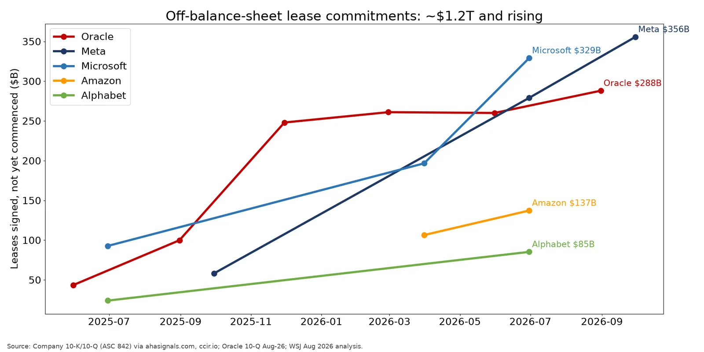

Q4. Off-Balance-Sheet Exposure

- About $1.2T of data-center leases have been signed but have not yet commenced, so they are off the balance sheet. The amounts are Meta $355.7B (Sep-26), Microsoft $329.1B (Jun-26), Oracle $288B (Aug-26), Amazon $137.2B (Jun-26) and Alphabet $85.2B (Jun-26). Total signed-but-undelivered commitments are about $2.8T. (source)
- Growth is steep. Meta's figure rose from $58B to $356B in a year, about 6x. Oracle's went from $43B (May-25) to $288B, Microsoft's from $93B to $329B, and Alphabet's from $24B to $85B. (source)
- WSJ: Big Tech's AI spending is '$3 trillion higher than it seems' once off-balance-sheet obligations are counted. (source)
- The obligations are off the balance sheet and growing far faster than revenue: about $1.2T of uncommenced leases plus Meta's $41.5B maximum RVG and Alphabet's $43.8B of backstops. (source)
- Disclosure under ASC 842 is fairly transparent. The leases appear in footnotes, and investors such as WSJ, Reuters and ratings agencies are pricing them. (source)
Source: Company 10-K/10-Q (ASC 842) via ahasignals.com, ccir.io; Oracle 10-Q Aug-26; WSJ Aug 2026 analysis.
https://ahasignals.com/research/uncommenced-lease-commitments/ https://ccir.io/credit/commitments https://www.sec.gov/Archives/edgar/data/1341439/000119312526389274/orcl-20260831.htm https://www.wsj.com/tech/ai/why-big-techs-ai-spending-is-3-trillion-higher-than-it-seems-e1067bb2